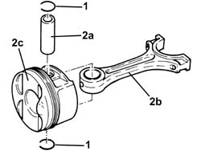
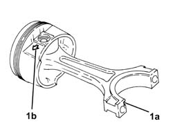
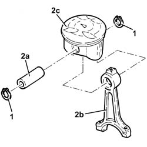
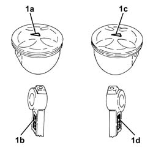
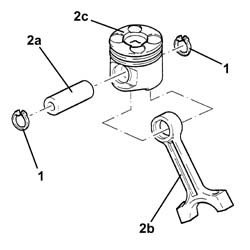
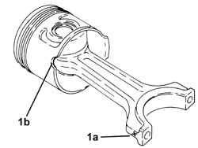
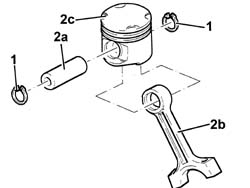

1028H54 PISTON/CYLINDER LINER - R R
- Path
- Procedures > 10 ENGINE UNIT > 1028 PISTONS AND CONNECTING RODS > 1028H PISTONS AND CONNECTING RODS > 1028H54 PISTON/CYLINDER LINER - R R
- Kind
- repair procedure (removal / refitting; the operation number is the code)
- Applies to
- all engines; all production periods
- Interactive page
- https://sloeber94.github.io/elrnDB-aGt/en/#/125000956
Applies to: engines: 2.0 JTS; all production periods
 Removing
Removing
 Refitting
Refitting1. Remove the circlips.
2. Remove the pin (2a) and separate the connecting rod (2b) from the piston (2c).

Applies to: engines: 2.0 JTS; all production periods
Refitting
Removing1. Join the connecting rod to the piston so that safety notch (1a) on the connecting rod for the relevant half-bearing is on the side indicated by the arrow (1b) stamped on the piston skirt.

Applies to: engines: 2.0 JTS; all production periods
Refit the pin and secure using piston rings.
Applies to: engines: 3.2 V6; all production periods
Removing
Refitting1. Remove the circlips.
2. Remove the pin (2a) and separate the connecting rod (2b) from the piston (2c).

Applies to: engines: 3.2 V6; all production periods
Refitting
Removing1. Join the connecting rod to the piston so that:
for the left bank, arrow (1a) stamped on the piston is turned toward the same side as the stamp (1b) on the connecting rod;
for the right bank, arrow (1c) stamped on the piston is turned towards the opposite side to the stamp on the connecting rod.
Refit the pin and secure using piston rings.

Applies to: engines: 1.9 JTD 16V; all production periods
Removing
Refitting1. Remove the circlips.
2. Remove the pin (2a) and separate the connecting rod (2b) from the pistons (2c).

Applies to: engines: 1.9 JTD 16V; all production periods
Refitting
Removing1. Join the connecting rods to the pistons so that the number stamped on the big end (1a) is facing the reference (1b) on the piston skirt where the oil jet is housed.
Fit the pins and secure them using the circlips.

Applies to: engines: 1.8 T.SPARK; all production periods
1. Remove the circlips
2. Remove the pin (2a) and separate the connecting rod (2b) from the piston (2c).

Applies to: engines: 1.8 T.SPARK; all production periods
Assemble the connecting rod to the piston so that the number stamped on the small end faces the large notches (for inlet valves) on the piston crown.
Fit the pin and secure it with its circlips.